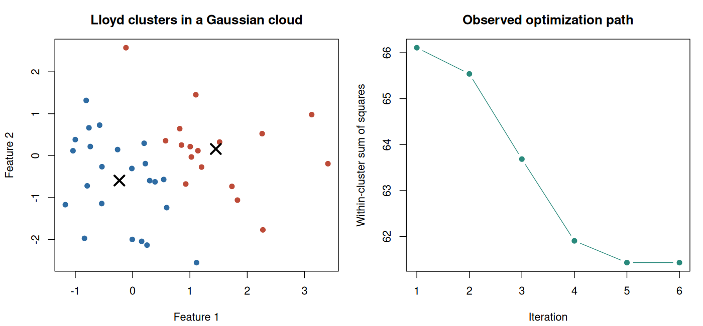

13. Selective inference after k-means#
Learning objectives#
This chapter develops three skills: translating an iterative learning algorithm into a selection event, distinguishing a selected mean contrast from clustering stability, and evaluating an implementation whose inferential guarantee depends on the algorithmic history.
We retain the known-variance Gaussian model and selected-group mean target from Chapter 12. The new difficulty is computational. A hierarchical procedure selects a sequence of merges. Lloyd’s k-means procedure alternates assignments and centre updates. The event describing its output therefore has a different structure.
13.1 Lloyd’s algorithm is part of the statistical procedure#
Given initial centres \(c_1^{(0)},\ldots,c_K^{(0)}\), Lloyd’s algorithm alternates
and
Tie handling, empty-cluster handling, initialization, the iteration limit, and stopping rules complete this description. Each assignment step and centre update cannot increase the within-cluster sum of squares when the algorithm is well defined. Monotonic improvement does not guarantee a global optimum.
Different software can implement different algorithms under the name k-means. Base R’s default is not Lloyd’s algorithm. Even when Lloyd is requested, an inferential implementation may need information that ordinary fitting software discards. The KmeansInference tutorial explains why its fitting function retains the intermediate assignments.
Example 13.1 — The final partition does not describe the full path
Take one-dimensional observations \((-3,-1,1,4)\) and initialize centres at \(-3\) and \(-1\). The first assignment puts \(-3\) alone and the other three observations together. Updating gives centres \(-3\) and \(4/3\). The next assignment gives groups \(\{-3,-1\}\) and \(\{1,4\}\), whose updated centres are \(-2\) and \(2.5\).
Starting instead at \(-3\) and \(4\) reaches the same final groups immediately. These runs share a final partition but not an assignment history. A test that conditions on the full path must describe the path actually used.
13.2 Why the fitting criterion rewards the naïve test statistic#
For \(K=2\), the sum-of-squares decomposition is particularly informative. Let \(n_1,n_2\) be cluster sizes, \(\bar x\) the overall mean, and \(D=\bar x_{C_1}-\bar x_{C_2}\). Then
The ordinary known-variance Wald statistic for fixed groups is
For a fixed dataset, minimizing within-cluster variation therefore increases precisely the between-group statistic that a naïve test treats as unselected. The problem is built into the optimization objective; it is not only a peculiarity of one software implementation.
Example 13.2 — Optimization and significance share a statistic
Suppose \(q=2\), \(\sigma=1\), the total sum of squares is 80, and a two-cluster solution has within-cluster sum of squares 48. Then \(\operatorname{BSS}=32\) and \(W=32\). A fixed-group chi-square calculation would give \(e^{-16}\approx1.13\times10^{-7}\).
These illustrative values describe the calculation, not an executed simulation result. Searching for a small WCSS also searches for a large \(W\). A selective analysis must account for that search before interpreting the small reference tail as evidence.
13.3 Conditioning on the assignment history#
Chen and Witten (2023) develop an efficiently computable selective test by conditioning on the intermediate assignments of k-means. The target remains
for the selected groups, under the stated Gaussian model. Their method is specific to the algorithm and conditioning event; a hierarchical-clustering formula cannot simply be reused.
Use the same contrast vector \(\nu\), observed direction \(u\), and radius perturbation as before:
Now require the algorithm to reproduce its observed assignment history as \(\phi\) varies. Along this path each observation is affine in \(\phi\):
Once a previous assignment is fixed, each updated centre is an average of such observations and is also affine in \(\phi\). The condition that observation \(i\) chooses centre \(k\) instead of centre \(\ell\) is
Both sides are quadratic in \(\phi\). Intersecting the constraints across observations, candidate centres, and iterations yields an admissible set of radii. Integrating the appropriate scaled-chi density over this set gives the selective upper tail.
This derivation explains the computational opportunity without claiming that the original selection event is polyhedral in the full data matrix. Quadratic inequalities along a one-dimensional path can be manageable even when a general multidimensional description is complicated.
13.4 The choices outside the path also matter#
The first demonstration fixes \(K\), the features, the noise scale, and the initialization rule. The package’s fitting and inference routines use the same seed and iteration limit. A selected run from many random restarts is a different procedure: the comparison between restarts is another selection step.
Similarly, choosing \(K\) from a silhouette plot, selecting coordinates after inspecting separation, or learning a transformation and treating it as known can move beyond the stated guarantee. This does not mean those actions are forbidden. It means that a theorem for one specified pipeline does not automatically cover an expanded pipeline.
Conditional validity also has a cost. Conditioning on more of the path can discard information. A procedure with a finer conditioning event may be easier to compute but have lower power than a feasible procedure conditioning less. There is no universal rule that additional conditioning is free.
13.5 Three different assessments of a clustering#
Question |
Example quantity |
Interpretation |
|---|---|---|
Does the algorithm produce a similar partition under perturbation? |
Pairwise co-membership agreement across runs |
Algorithmic or sampling stability |
Did it recover a stipulated grouping? |
Adjusted Rand index against known simulation labels |
Recovery relative to that reference |
Is a selected mean contrast inconsistent with its null? |
Selective p-value |
Evidence under a specified sampling model and selection event |
None of these quantities substitutes for the others. A stable partition of a continuous cloud need not reveal a mixture of populations. An unstable algorithm can still be paired with a correctly calibrated selected-hypothesis test. Recovery metrics require a reference grouping, while an inferential null must identify the relevant population parameter.
For a simulation under alternatives, report how often the intended groups are recovered and what rejection probability is obtained conditional on that recovery, or otherwise describe the actual selected contrasts. This prevents a favourable rejection rate from hiding a changing target.
Keep a record of the choices that define the event#
A reproducible fitting record needs more than the final cluster labels. Retain the input features and transformations, initialization rule, tie and empty-cluster rules, assignment history, stopping criterion, and any comparison among restarts. The path-conditioned test uses the relevant record to reconstruct which perturbed data would have followed that path.
If several restarts are tried and the smallest objective is chosen, that final comparison is another selection step. Saving all seeds makes the search reproducible but does not itself account for the search statistically. Use an inferential method that covers the actual procedure or restrict the analysis to its justified scope.
13.6 Reproducible Laboratory#
The base-R component implements a transparent two-centre Lloyd trace and verifies that its objective does not increase. It compares initializations using a label-invariant co-membership measure and demonstrates naïve null rejection after learning groups.
If KmeansInference is installed, an additional block executes the authors’ fitting-dependent selective procedure, with fixed arguments, and reports paired naïve and selective results for that same procedure. The script distinguishes this extension from the base-R diagnostic. Initialization agreement is not assumed between two separately written implementations.
Code
# Chapter 13: transparent Lloyd algorithm and optional authors' inference.
set.seed(2026102113)
options(width = 145)
lloyd_trace <- function(x, initial_indices = c(1L, nrow(x)), max_iter = 30L) {
centers <- x[initial_indices, , drop = FALSE]
previous <- rep(0L, nrow(x))
history <- list()
objective <- numeric()
for (iteration in seq_len(max_iter)) {
distances <- sapply(seq_len(nrow(centers)), function(k)
rowSums(sweep(x, 2L, centers[k, ], "-")^2))
groups <- max.col(-distances, ties.method = "first")
if (length(unique(groups)) != nrow(centers))
stop("Empty cluster: this demonstration does not silently repair it.")
centers <- t(vapply(seq_len(nrow(centers)), function(k)
colMeans(x[groups == k, , drop = FALSE]), numeric(ncol(x))))
history[[iteration]] <- groups
objective[iteration] <- sum((x - centers[groups, , drop = FALSE])^2)
if (identical(groups, previous)) break
previous <- groups
}
list(groups = groups, centers = centers, history = history,
objective = objective,
converged = length(history) >= 2L &&
identical(history[[length(history)]], history[[length(history) - 1L]]))
}
pair_agreement <- function(a, b) {
keep <- upper.tri(matrix(FALSE, length(a), length(a)))
mean((outer(a, a, "==") == outer(b, b, "=="))[keep])
}
wald_p <- function(x, groups, sigma = 1) {
g <- groups == 1L
d <- colMeans(x[g, , drop = FALSE]) - colMeans(x[!g, , drop = FALSE])
pchisq(sum(d^2) / (sigma^2 * (1 / sum(g) + 1 / sum(!g))),
df = ncol(x), lower.tail = FALSE)
}
n <- 40L
q <- 2L
repetitions <- 400L
samples <- lapply(seq_len(repetitions), function(i) matrix(rnorm(n * q), n, q))
x <- samples[[2L]] # Fixed illustration; the calibration study uses every replicate.
first <- lloyd_trace(x, c(1L, n))
second <- lloyd_trace(x, c(10L, 30L))
cat("Lloyd trace for one Gaussian cloud\n")
print(data.frame(iteration = seq_along(first$objective),
within_sum_squares = first$objective),
row.names = FALSE, digits = 5)
cat("Objective never increases:",
all(diff(first$objective) <= 1e-8), "\n")
cat("Converged:", first$converged, "\n")
cat("Pairwise co-membership agreement across two fixed initializations:",
format(pair_agreement(first$groups, second$groups), digits = 4), "\n")
naive_p <- vapply(samples, function(dat) {
fit <- lloyd_trace(dat)
wald_p(dat, fit$groups)
}, numeric(1))
summarize_p <- function(method, p) {
rate <- mean(p <= 0.05)
mc_interval <- binom.test(sum(p <= 0.05), length(p))$conf.int
data.frame(method = method, runs = length(p), rejection_rate = rate,
monte_carlo_se = sqrt(rate * (1 - rate) / length(p)),
mc_lower = mc_interval[1L], mc_upper = mc_interval[2L])
}
cat("\nBase-R fixed-initialization Lloyd: global-null diagnostic\n")
print(summarize_p("Naive Wald after Lloyd clustering", naive_p),
row.names = FALSE, digits = 4)
cat("This diagnostic is not a selective-inference procedure.\n")
cat("mc_lower/mc_upper are exact 95% binomial Monte Carlo intervals.\n")
cat("An observed rate of 1 has plug-in MCSE 0 but still has binomial uncertainty.\n")
if (requireNamespace("KmeansInference", quietly = TRUE)) {
exact_reps <- 60L
p_selective <- p_naive_author <- rep(NA_real_, exact_reps)
errors <- character()
for (b in seq_len(exact_reps)) {
fit <- tryCatch(
KmeansInference::kmeans_inference(
samples[[b]], 2L, 1L, 2L, sig = 1,
iter.max = 30L, seed = 2026L, verbose = FALSE
),
error = function(e) e
)
if (inherits(fit, "error")) {
errors <- c(errors, conditionMessage(fit))
} else {
tab <- summary(fit)
p_selective[b] <- tab$p_selective[1L]
p_naive_author[b] <- tab$p_naive[1L]
}
}
valid <- is.finite(p_selective) & p_selective >= 0 & p_selective <= 1 &
is.finite(p_naive_author)
cat("\nAuthors' path-conditioned method EXECUTED; KmeansInference version",
as.character(utils::packageVersion("KmeansInference")), "\n")
cat("Successful finite p-values:", sum(valid), "of", exact_reps, "\n")
if (all(valid)) {
print(rbind(
summarize_p("Authors' algorithm: naive", p_naive_author),
summarize_p("Authors' algorithm: selective", p_selective)
), row.names = FALSE, digits = 4)
} else {
cat("Calibration summary withheld because some runs failed.\n")
if (length(errors)) print(unique(errors))
}
cat("The paired comparison uses the same authors' algorithm and seed.\n")
cat("Sixty repetitions are a demonstration, not a high-precision size study.\n")
} else {
cat("\nOptional selective procedure NOT EXECUTED: KmeansInference is not installed.\n")
cat("Author instructions: https://yiqunchen.github.io/KmeansInference/\n")
}
plot_dir <- Sys.getenv("COURSE_FIGURE_DIR", unset = "")
if (nzchar(plot_dir)) {
dir.create(plot_dir, recursive = TRUE, showWarnings = FALSE)
png(file.path(plot_dir, "13-kmeans-inference.png"),
width = 1400, height = 650, res = 130)
old_par <- par(mfrow = c(1, 2), mar = c(4.2, 4.2, 3, 1))
plot(x, col = c("#2f6ca3", "#bd4b38")[first$groups], pch = 19,
xlab = "Feature 1", ylab = "Feature 2",
main = "Lloyd clusters in a Gaussian cloud")
points(first$centers, pch = 4, cex = 2, lwd = 3)
plot(seq_along(first$objective), first$objective, type = "b", pch = 19,
col = "#2a8a7c", xlab = "Iteration", ylab = "Within-cluster sum of squares",
main = "Observed optimization path")
par(old_par)
invisible(dev.off())
}
Computed output#
Output
Lloyd trace for one Gaussian cloud
iteration within_sum_squares
1 66.109
2 65.540
3 63.685
4 61.906
5 61.432
6 61.432
Objective never increases: TRUE
Converged: TRUE
Pairwise co-membership agreement across two fixed initializations: 0.5192
Base-R fixed-initialization Lloyd: global-null diagnostic
method runs rejection_rate monte_carlo_se mc_lower mc_upper
Naive Wald after Lloyd clustering 400 1 0 0.9908 1
This diagnostic is not a selective-inference procedure.
mc_lower/mc_upper are exact 95% binomial Monte Carlo intervals.
An observed rate of 1 has plug-in MCSE 0 but still has binomial uncertainty.
Authors' path-conditioned method EXECUTED; KmeansInference version 0.1.0
Successful finite p-values: 60 of 60
method runs rejection_rate monte_carlo_se mc_lower mc_upper
Authors' algorithm: naive 60 1.00000 0.00000 0.940371 1.0000
Authors' algorithm: selective 60 0.03333 0.02317 0.004063 0.1153
The paired comparison uses the same authors' algorithm and seed.
Sixty repetitions are a demonstration, not a high-precision size study.


Exercises#
Exercise 13.1. Prove the two-cluster identity \(\operatorname{BSS}=n_1n_2\|D\|^2/(n_1+n_2)\).
Exercise 13.2. Expand one assignment inequality along \(x'(\phi)\) and show that it is a quadratic inequality. Why can its feasible set be disconnected?
Exercise 13.3. A software function returns a final partition but no iteration history. Is that enough to implement the path-conditioned procedure described here? What extra information is required?
Exercise 13.4. Construct a research report outline that presents stability, recovery, and selective testing without treating one as proof of another. Specify the null-model part of the experiment.
Solutions#
Solution to Exercise 13.1
Since \(\bar x=(n_1\bar x_1+n_2\bar x_2)/n\), we have \(\bar x_1-\bar x=(n_2/n)D\) and \(\bar x_2-\bar x=-(n_1/n)D\). Therefore
Solution to Exercise 13.2
Write the two difference vectors as \(r_k+s_k\phi\) and \(r_\ell+s_\ell\phi\). Subtracting their squared norms gives
A downward-opening quadratic can be nonpositive outside its two roots, producing two rays. Intersections of multiple such conditions with \(\phi\geq0\) can produce multiple intervals. A single truncation interval cannot be assumed.
Solution to Exercise 13.3
No. The procedure must recover the initial-centre rule, intermediate assignments, and relevant stopping and tie rules so that it can express the same selection event. Re-running a documented deterministic algorithm from preserved initialization information may recover the history; a bare final partition generally cannot identify it.
Solution to Exercise 13.4
First assess null calibration with independent \(N_q(0,\sigma^2I_q)\) rows and a known noise scale. Report selective rejection frequency with Monte Carlo uncertainty and all failures. Next introduce a documented mean structure, report recovery of its reference groups, and distinguish conditional power from unconditional rejection. Finally vary initialization or perturbations and show a separate co-membership stability measure. Keep the three headings and interpretations separate.
Reading and next step#
Core: Chen, Y. T., and Witten, D. M. (2023). Selective inference for k-means clustering. JMLR 24(152), 1–41. Paper and code.
Implementation: KmeansInference and its software tutorials.
The final chapter turns the course’s methods into a reproducible research workflow and develops an independent-information comparison using Gaussian data thinning.